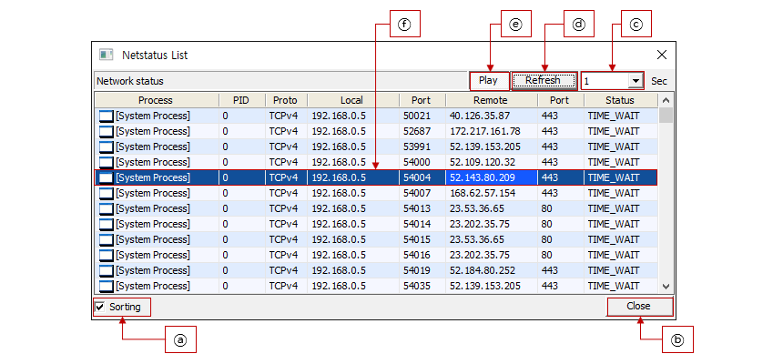

<!-- Google Tag Manager (noscript) -->
<noscript><iframe src="https://www.googletagmanager.com/ns.html?id=GTM-NQDM7PB"
    height="0" width="0" style="display:none;visibility:hidden"></iframe>
</noscript>
<!-- End Google Tag Manager (noscript) -->

<style>
    .mnu_page {
        -display: flex;
    }
    .menual_page {
        --width: 860;
        padding-left: 5px;
        margin-bottom: 32px;
    }
    .section_text {
        padding-left: 5px;
    }
    .tl_title {
        border-top: #fecc45 solid 2px;
        border-left: #fecc45 solid 10px;
        border-bottom: #fecc45 solid 2px;
    }
    .tl_section {
        border-bottom: #fecc45 solid 2px;
        color: #fecc45;
    }
    .tl_line {
        text-indent: -1.5em;
        padding-left: 1.5em;
    }
    .tl_lsub {
        padding-left: 1.5em;
    }
    .tl_image {
        max-width:100%;
        height:auto;
    }
</style>
<div class="menual_page">
    <div>
        <h2 class="tl_title">Main Dialog</h2>
    </div>
    <div>
        <div class="section_text">
            
            <div class="tl_section">▶ Description of the screen</div>
            <div class="">Manage Packet Dialog as GlanceNet Main-Dialog.Displays the items of Packet-Dialog added in Connection-Dialog, Netstat-Dialog, etc.</div>
            <br>
            <div class="tl_section">▶ Description of Control function on the screen </div>
            <div class="tl_line">ⓐ “Play…” : Play the function of GlanceNet. </div>
            <div class="tl_line">ⓑ “Stop” : Stop the function of GlanceNet. </div>
            <div class="tl_line">ⓒ “Connect” : Show Connection-Dialog </div>
            <div class="tl_line">ⓓ “Netstat” : Show Netstat-Dialog </div>
            <div class="tl_line">ⓔ “Log” : Show Log-Dialog </div>
            <div class="tl_line">ⓕ “Close” : Exit GlanceNet </div>
            <div class="tl_line">ⓖ “Donate” : donate plz. </div>
            <div class="tl_line">ⓗ “About” : Show About-Dialog </div>
            <div class="tl_line">ⓘ Item selected in grid </div>
            <div class="tl_lsub">    : add by Connect-Dialog or Netstat-Dialog </div>
            <div class="tl_lsub">    - Double-Click : Show Packet-Dialog </div>
            <div class="tl_lsub">    - Right-Click : Show Context-Menu </div>
        </div>
    </div>
</div>

<div class="menual_page">
    <div>
        <h2 class="tl_title">Connection Dialog</h2>
    </div>
    <div>
        <div class="section_text">
            
            <div class="tl_section">▶ Description of the screen</div>
            <div class="">Displays network connection information. When double-clicking a specific item, a Packet-Dialog is added with the selected IP and Port.</div>
            <br>
            <div class="tl_section">▶ Description of Control function on the screen </div>
            <div class="tl_line">ⓐ “Only Connected” : Set whether to display “Connecting” among the following two types. </div>
            <div class="tl_lsub">    - “Connected”  : Connection is complete </div>
            <div class="tl_lsub">    - “Connecting” : request to connect </div>
            <div class="tl_line">ⓑ “Show Process” : Displays the process name. </div>
            <div class="tl_line">ⓒ “Logging” : Save the connection information as a log file. </div>
            <div class="tl_lsub">    - filename : “GlanceNet.conn.$DATE.log” </div>
            <div class="tl_line">ⓓ “Close” : Close Connection-Dialog </div>
            <div class="tl_line">ⓔ “1000 Rows” : Maximum number of scrolls (After the maximum number, it is deleted from grid.) </div>
            <div class="tl_line">ⓕ “Clear” : Delete all records in grid. </div>
            <div class="tl_line">ⓖ “Play” : Display the connection information on the network on the Grid. </div>
            <div class="tl_line">ⓗ Item selected in grid </div>
        </div>
    </div>
</div>

<div class="menual_page">
    <div>
        <h2 class="tl_title">Netstat Dialog</h2>
    </div>
    <div>
        <div class="section_text">
            
            <div class="tl_section">▶ Description of the screen</div>
            <div class="">Display the status of Netstat. When double-clicking a specific item, a Packet-Dialog is added with the selected IP and Port.</div>
            <br>
            <div class="tl_section">▶ Description of Control function on the screen </div>
            <div class="tl_line">ⓐ “Sorting” : Auto sort </div>
            <div class="tl_line">ⓑ “Close” : Close Netstatus-Dialog </div>
            <div class="tl_line">ⓒ “1 sec” : Auto refresh time (Second) </div>
            <div class="tl_line">ⓓ “Refresh” : Refresh the grid </div>
            <div class="tl_line">ⓔ “Play” : Display the netstatus information on the network on the Grid. </div>
            <div class="tl_line">ⓕ Item selected in grid </div>
        </div>
    </div>
</div>

<div class="menual_page">
    <div>
        <h2 class="tl_title">Log Dialog</h2>
    </div>
    <div>
        <div class="section_text">
            
            <div class="tl_section">▶ Description of the screen</div>
            <div class="">Display log of GlanceNet or log of Packet-Dialog.</div>
            <br>
            <div class="tl_section">▶ Description of Control function on the screen </div>
            <div class="tl_line">ⓐ “Close” : Close Log-Dialog</div>
            <div class="tl_line">ⓑ “1000 Rows” : Maximum number of scrolls (After the maximum number, it is deleted from grid.)</div>
            <div class="tl_lsub">    - Auto refresh time (Second)</div>
            <div class="tl_line">ⓒ “Clear” : Delete all records in grid.</div>
            <div class="tl_line">ⓓ “Play” : Display the logging on the Grid.</div>
        </div>
    </div>
</div>

<div class="menual_page">
    <div>
        <h2 class="tl_title">Packet Dialog</h2>
    </div>
    <div>
        <div class="section_text">
            
            <div class="tl_section">▶ Description of the screen</div>
            <div class="">Displays packet dump of specified IP and port among flow data in network</div>
            <br>
            <div class="tl_section">▶ Description of Control function on the screen </div>
            <div class="tl_line">ⓐ “Protocol” : Using Protocol Analyzer </div>
            <div class="tl_line">ⓑ “Script” : Select a protocol analyzer and have the following options. </div>
            <div class="tl_lsub">    - "TCP" : TCP Protocol method used (TCP-sequence analysis) </div>
            <div class="tl_lsub">    - "HTTP" : Use HTTP Protocol (CRLF analysis) </div>
            <div class="tl_lsub">    - "Script": Use a custom protocol analyzer (javascript file)  </div>
            <div class="tl_line">ⓒ “Browse” : If you select "Script" analyzer, select javascript file </div>
            <div class="tl_line">ⓓ Selected javascript filename </div>
            <div class="tl_line">ⓔ “Log” : Show Log-Dialog such as console when "Script" analyzer is running </div>
            <div class="tl_line">ⓕ “Linger” : The number and size of packets saved due to analysis failure (Clean up with "Clear" button) </div>
            <div class="tl_line">ⓖ “Close” : Close Packet-Dialog </div>
            <div class="tl_line">ⓗ “Binary” : Packet dump is displayed in Binary or Structure format </div>
            <div class="tl_lsub">    - "Binary" : Display dump like tcpdump </div>
            <div class="tl_lsub">    - "Struct" : Displayed in Structure form when "Script" analyzer is selected </div>
            <div class="tl_line">ⓘ “Real” : Real-time display of dumps </div>
            <div class="tl_line">ⓙ “Scroll” : Auto Scroll </div>
            <div class="tl_line">ⓚ “50000” : Maximum number that can be displayed </div>
            <div class="tl_line">ⓛ “Recv” : Display "Recieved Data" </div>
            <div class="tl_line">ⓜ “send” : Display "Sended Data" </div>
            <div class="tl_line">ⓝ “Clear” : Clean all data </div>
            <div class="tl_line">ⓞ “Play” : Display packet data </div>
            <div class="tl_line">ⓟ Show transmitted/received packets on grid </div>
            <div class="tl_line">ⓠ Show transmitted/received packets on binary-view </div>
        </div>
    </div>
</div>

<div></div>
